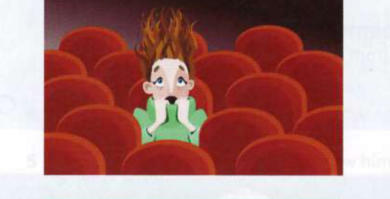
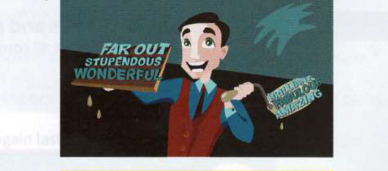
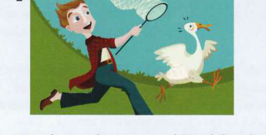
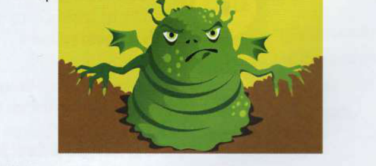

Exercises
21.1
Replace the underlined part of each sentence with an idiom.
1
The film is about two people unlucky in love and their relationship.
2
Max and his friends managed to eat all the food I had in the house.
3
Harry's driving terrified me, but we arrived safely.
4
He set off on a hopeless quest to find the buried treasure he'd read about.
5
Masha prepared a delicious meal in what seemed like no time at all.
6
Jealousy is responsible for many crimes of passion.
7
The reviewer didn't praise the play subtly - he went on and on about how wonderful it was.
21.2
Complete each idiom.
1
So, Helen's parents are trying to persuade her not to get married to Tom? Oh well, the course of .................................................. love never did run ..................................................!
2
This thriller is terrifying. It'll make your hair stand on ...................................................
3
I need to go shopping. The kids have eaten us out of .................................................. and home.
4
I'll just let the cat out, then I'll be with you in the twinkling of an ...................................................
5
Let's try and write all our holiday postcards at one fell .................................................. this morning.
21.3
Which idioms do these pictures make you think of?
1

......................................................................
3

......................................................................
2

......................................................................
4

......................................................................
21.4
Complete each sentence with an idiom from 21.3.
1
The bank robbers left the country after they had cleverly managed to send the police off on a .......................................................................................................
2
The ghost story David told made ................................................................................................
3
Maya and Harry's relationship was destroyed by .................................................................................................................
4
Simply tell your daughter that you like her work. There's no need to .................................................................................................................
Over to you
'Pound of flesh' and 'send someone packing' are two other idioms from Shakespeare. Search for these phrases online and see if you can find their meaning and origin. You could search using a search engine such as Google, or visit the website http://www.phrases.org.uk. See if you can find any other Shakespearean idioms in common usage.